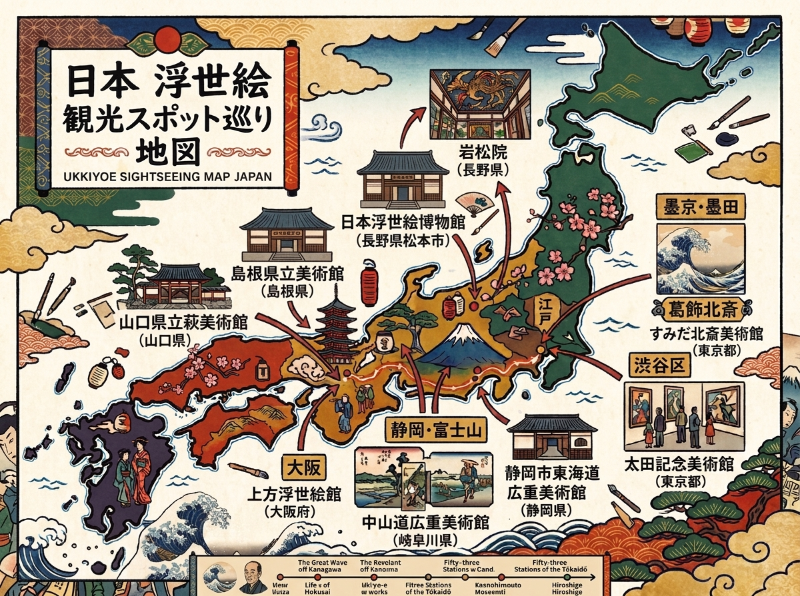
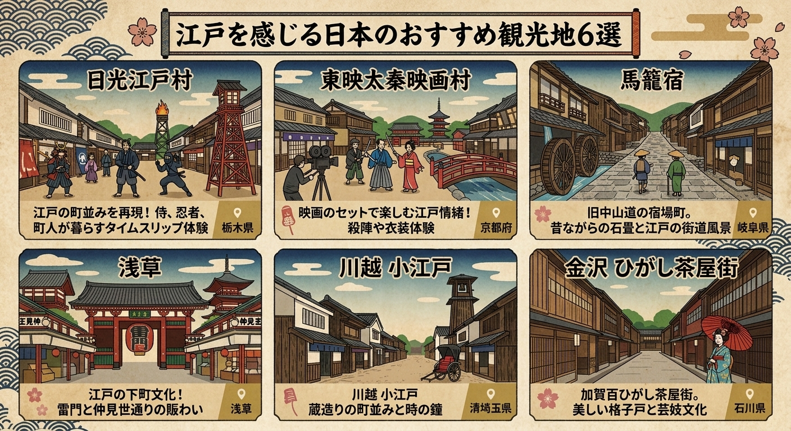

おすすめスポット
公開時には、実際に訪れられる美術館・博物館・浮世絵師ゆかりの地を掲載します。
01
浮世絵関連の美術館
代表的な浮世絵を実際に鑑賞できる施設を紹介。

すみだ北斎美術館
〒130-0014 東京都墨田区亀沢2-7-2
公式サイトを見る →
太田記念美術館
〒150-0001 東京都渋谷区神宮前1-10-10
公式サイトを見る →
静岡市東海道広重美術館
〒421-3103 静岡市清⽔区由⽐297-1
公式サイトを見る →
中山道広重美術館
〒509-7201 岐阜県恵那市大井町176-1
公式サイトを見る →
上方浮世絵館
〒542-0076 大阪府大阪市中央区難波1-6-4
公式サイトを見る →
大阪浮世絵美術館
〒542-0085 大阪市中央区心斎橋筋2-2-23 不二家心斎橋ビル3F
公式サイトを見る →
梅洞山 岩松院
〒381-0211 長野県上高井郡小布施町雁田615
公式サイトを見る →
北斎館
〒381-0201 長野県上高井郡小布施町大字小布施485
公式サイトを見る →
日本浮世絵博物館
〒390-0852長野県松本市島立2206-1
公式サイトを見る →
島根県立美術館
〒690-0049 島根県松江市袖師町1-5
公式サイトを見る →
山口県立萩美術館・浦上記念館
〒758-0074 山口県萩市平安古町586-1
公式サイトを見る →
02
江戸文化を感じる場所
浮世絵が生まれた時代の暮らしを体験できる場所。

日光江戸村
栃木県日光市
公式サイトを見る →
太秦映画村
京都府京都市
公式サイトを見る →
馬籠宿
岐阜県中津川市
公式サイトを見る →
浅草
東京都台東区浅草
公式サイトを見る →
川越 小江戸
埼玉県川越市
公式サイトを見る →
ひがし茶屋街
石川県金沢市
公式サイトを見る →
03
デジタルで楽しむ浮世絵スポット
最先端の3DCGアニメーションやプロジェクションマッピングを駆使した体感型デジタルアートミュージアム。
動き出す浮世絵展
東京、他
公式サイトを見る →